Approved requirements, acceptance criteria, design risks, release candidate, test environment, and test data.
Phase 04 · Verification and acceptance
Testing
Compare the System Under Test with its requirements, identify defects and gaps, and produce evidence that the release is ready for users and production.
At a glance
Testing turns requirements into observable evidence.
A test case states the steps, inputs, test data, and expected result for checking a behavior. Actual results are compared with that expectation. Failures become defects that are recorded, corrected, and retested.
Run tests, analyze failures, report defects, verify fixes, and assess remaining risk.
Test plan, cases, data, automated results, defect records, traceability matrix, report, and acceptance decision.
Testing workflow
From requirement to release decision
- Define the System Under TestName the application, feature, service, module, or complete system being evaluated and the exact version under test.
- Derive cases from requirementsFor each critical requirement, define the test steps, input, data, expected result, environment, and evidence to retain.
- Prepare the test environmentUse controlled configuration and representative data. System testing commonly uses staging because it resembles production without exposing live users.
- Execute the appropriate levels and typesProgress from isolated units to combined modules, the complete system, and stakeholder acceptance while also checking required quality attributes.
- Manage defectsRecord the failure, impact, steps to reproduce, evidence, owner, and status. After a fix, retest the defect and relevant existing behavior.
- Publish the decisionSummarize passed and failed checks, unresolved risk, coverage limits, and stakeholder approval or rejection.
Testing levels
Four scopes, from code to customer
| Level | What it checks | Typical timing or owner |
|---|---|---|
| Unit testing | A small, isolated function, class, or module. | Developers run it during Development before combination. |
| Integration testing | Communication between two or more modules, databases, services, or external devices. | After individual units pass; it targets failures created by combination. |
| System testing | The complete integrated product against specified functional and nonfunctional requirements. | After integration, usually in a staging environment similar to production. |
| Acceptance testing | Whether the system satisfies user needs, business processes, and stakeholder expectations. | Customers, users, or stakeholders use it to make the acceptance decision. |
Testing types
Behavior, qualities, and unintended change
Functional
Checks user-visible behavior and whether the correct outputs appear for given inputs. It often uses black-box testing, where the tester evaluates the software from the outside rather than reading its implementation.
Nonfunctional
Checks quality attributes such as performance, security, scalability, availability, compatibility, accessibility, documentation accuracy, and disaster recovery.
Regression
Repeats checks of existing behavior after a feature, defect fix, or requirement change. Its goal is to find functionality that worked before the change but now fails unexpectedly.
Evidence and handoff
What Deployment should receive
- Traceable coverageCritical requirements are connected to cases and results, making it clear what was verified and what was not.
- Defect positionFailures are fixed, deferred, or explicitly accepted with owners, impact, and rationale.
- Release reportThe tested version, environment, data, results, limitations, and unresolved risks are summarized for decision-makers.
- Acceptance evidenceUsers or stakeholders confirm that the product satisfies their needs and the agreed acceptance criteria.
Test evidence path
The existing project diagram connects approved requirements to test planning, four test levels, defect correction, regression, and release approval.


Plain-language terminology
Terms used in Testing
- System Under Test (SUT)
- The application, service, feature, module, or complete system currently being evaluated.
- Test case
- A defined set of steps, inputs, data, and expected results used to check one behavior or condition.
- Test data
- The controlled values and records supplied to a test so its result can be evaluated.
- Expected result
- The behavior or output that should occur when a test is performed correctly.
- Actual result
- The behavior or output observed when the test is executed.
- Defect
- A recorded difference between required or expected behavior and observed behavior.
- Black-box testing
- Testing from the outside by supplying inputs and evaluating outputs without relying on knowledge of the internal code.
- Functional testing
- Testing what the software does and whether its features behave correctly.
- Nonfunctional testing
- Testing how well the software operates, including security, performance, scalability, availability, and compatibility.
- Regression testing
- Rechecking existing behavior after a change to find accidental breakage.
- Staging
- A pre-production environment configured to resemble production for final integrated validation.
- Traceability matrix
- A table connecting requirements to the cases and results that verify them.
- UAT
- User acceptance testing: formal evaluation by users or stakeholders to decide whether the system meets their needs.
- Release candidate
- A build considered ready for release if final testing and approval do not reveal a blocking problem.
Source note
Testing content follows the dedicated repository note and the SDLC overview’s testing and release terminology.